Префектура Вакаяма · Сирахама · отель и онсэн
«Инфинито» в Сирахаме: курортный отель над морем у онсэна, которому 1400 лет
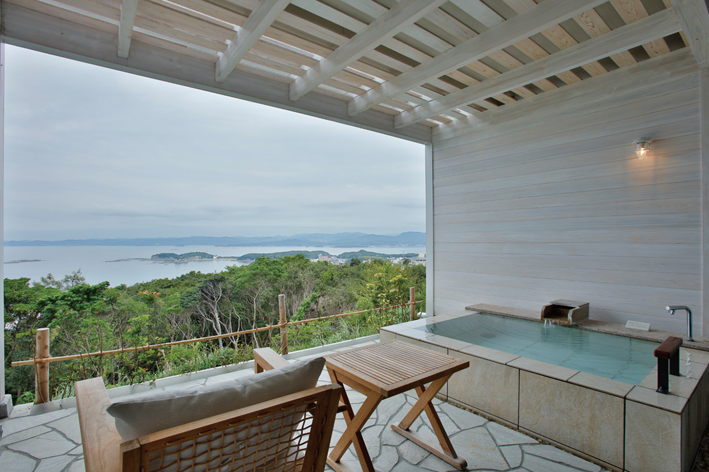
Онсэн Сирахама упоминается ещё в древних хрониках, и в его воды погружались императоры. На холме над морем стоит отель, куда когда-то съезжалась публика из Осаки и Киото: его обновили, и теперь это стильный курорт с той же целебной водой.
Отель
Дом на краю холма
Онсэн Сирахама в одноимённом городке на юге префектуры Вакаяма известен с глубокой древности. В хронике «Нихон сёки», первой официальной истории Японии (720 год), он назван «Муро-но идэю» и «Ки-но идэю». Вода бьёт из-под земли все эти века, а сюда приезжали купаться императоры.
В пяти минутах езды от аэропорта Нанки-Сирахама дорога поднимается на пологий холм и упирается в отель «Инфинито» (INFINITO HOTEL & SPA). Впереди только море: здание стоит на самом краю возвышенности.
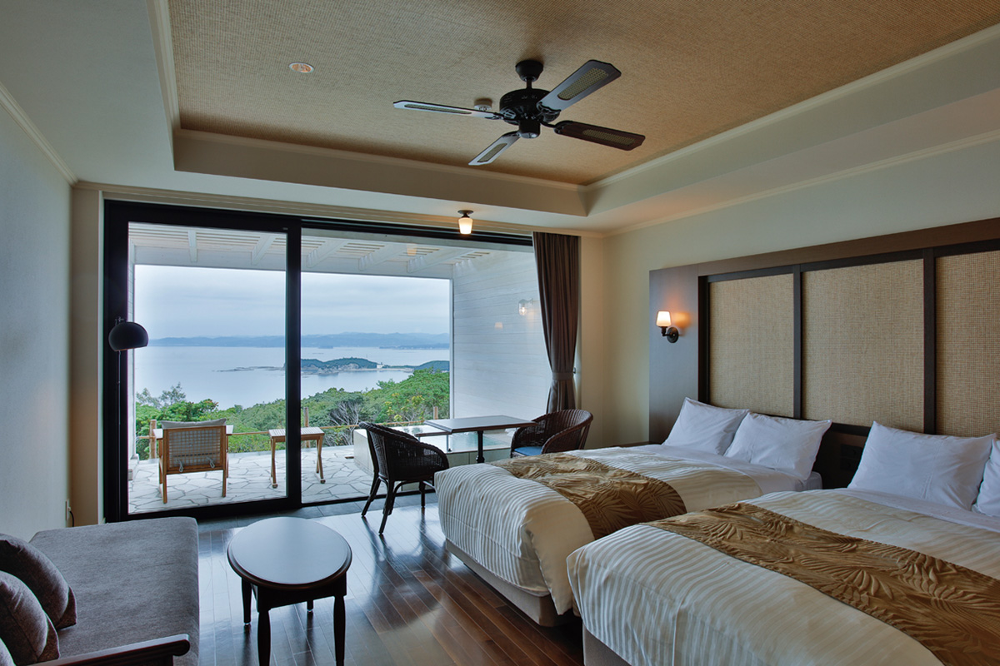
Стойка регистрации чем-то напоминает круизный лайнер. В просторной лаунж-зоне две стены целиком стеклянные, и за ними разворачивается панорама побережья, где небо сходится с морем. У окон стоят кресла для двоих, развёрнутые к воде. Мамы с дочерьми, влюблённые пары, супруги в возрасте садятся сюда и подолгу не двигаются: от такого вида забываешь и о времени, и о словах.
После войны Сирахама много лет оставалась мечтой молодожёнов и входила в число самых известных курортов страны эпохи Сёва. Отсюда всё побережье видно как на ладони.
Онсэн
Вода, в которой купались императоры
Владельцы отеля, супружеская пара, считают, что главное здесь не торопиться и наслаждаться самим курортом.
«Наша вода идёт из источника Гёко, одного из источников Сирахамы. Этому онсэну 1400 лет. Ещё в эпохи Асука и Нара его знали как „Муро-но идэю“ и „Ки-но идэю“, сюда приезжали император Момму и многие знатные люди»
владелец отеля
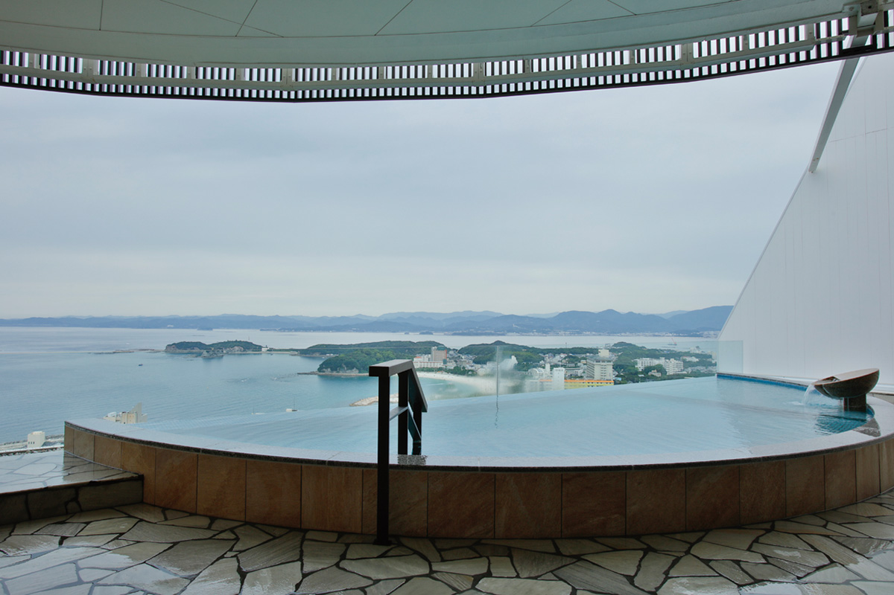
В летописях записаны и другие высокие гости: императрица Саймэй (594–661) и император Тэндзи (626–672), её сын, который до восшествия на престол правил страной как принц Нака-но Оэ. Император Момму (683–707) царствовал на рубеже VII и VIII веков. Вокруг Сирахамы к тому же сплошь священные места: святилище Исэ в соседней префектуре Миэ, три великих святилища Кумано и гора Коя. Если взглянуть на карту сверху, городок кажется перекрёстком, где встречаются боги. Воздух здесь чистый и свежий, и для курорта, где ищут покоя, лучших условий не придумать.
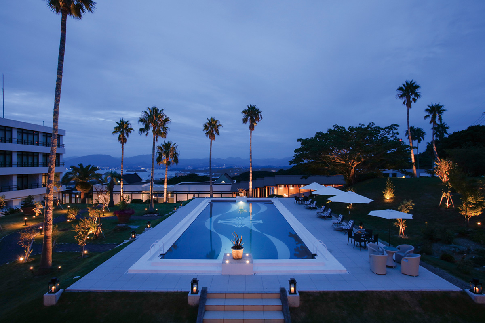
В самом отеле купален несколько. В двух больших, «Уми» («море») и «Сора» («небо»), есть открытые ванны и сауны, а третья, «Субару», задумана как авторская открытая ванна. Из любой видно и утреннее солнце, от которого прибавляется сил, и закат удивительной красоты.
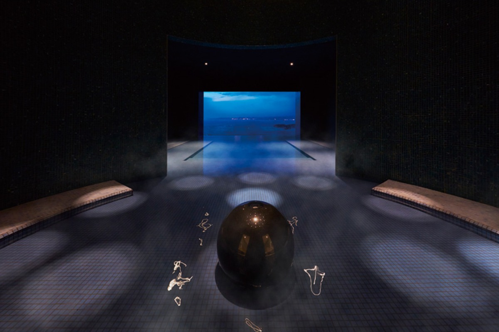
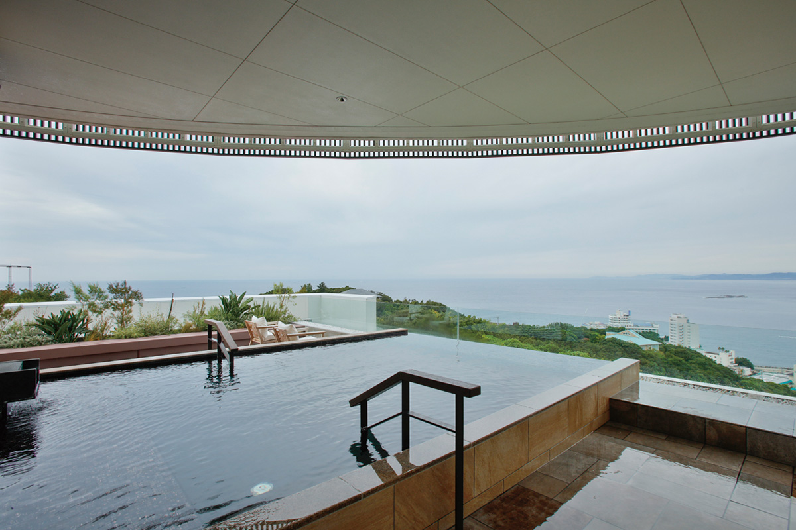
В углу лаунжа устроена библиотека, а за перегородкой прячется курительная комната «Пик-бар». В отличие от лаконичного современного лаунжа она обставлена основательно, в английском духе.
Кухня
Итальянец из Вероны и дары Южного Кисю
Ужин здесь итальянский: на кухне работает шеф Джованни Даль Боско. Его ресторан в саду так и называется, «Джованни», и сюда охотно возвращаются местные жители. Шеф соединяет опыт, полученный в Италии, с кухней родной Вероны и готовит авторские блюда из свежих продуктов Южного Кисю. Добрая улыбка шефа и его старательный японский только добавляют обаяния серьёзной кухне.
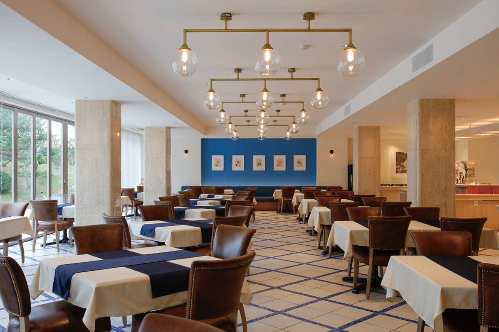
Ужин начинается с приветственной тарелки: хрустящие домашние гриссини и шоколад с джемом из бальзамика. На закуску подают жареные баклажаны, карпаччо из морского леща, профитроли с муссом из лосося и карпаччо из конины. Дальше идёт лосось с соусом из базилика и сельдерея и желтохвост с соусом из красной свёклы, а за ними лингвини в томатном соусе и томаты под сырным соусом.
Осенью в ризотто кладут чёрный чеснок и мацутакэ: чёрный чеснок шеф особенно любит за глубокий жареный аромат. Горячее состоит из свежей пасты в форме ракушек с жареным морским ушком, томатами и сезонными овощами, и от него пахнет морем. Сырную тарелку собирают как летний фейерверк: тут и пекорино с яблочной горчицей, и фонтина. На десерт подают насыщенный шоколадный тарт с фисташками, фруктами и джелато.
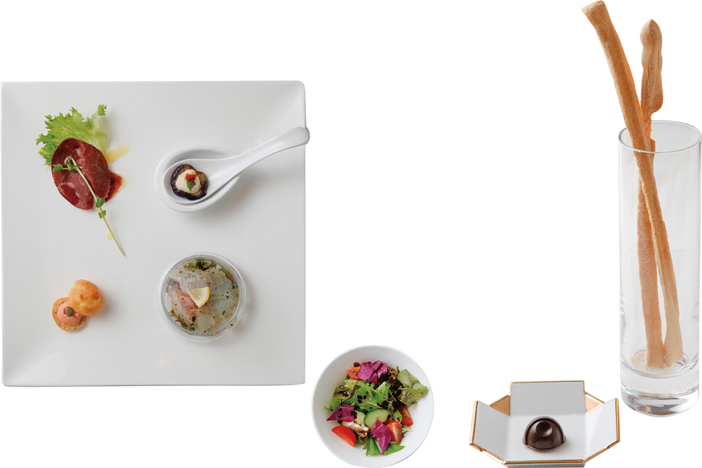
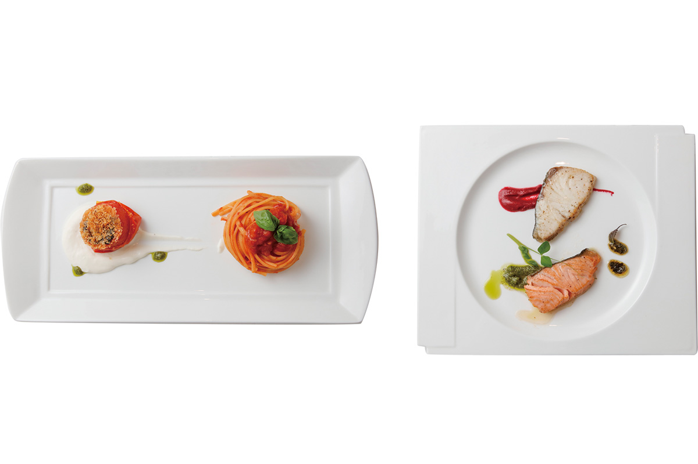
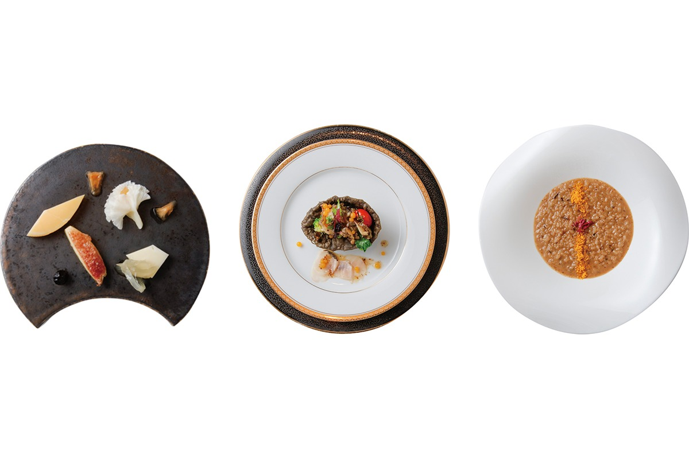
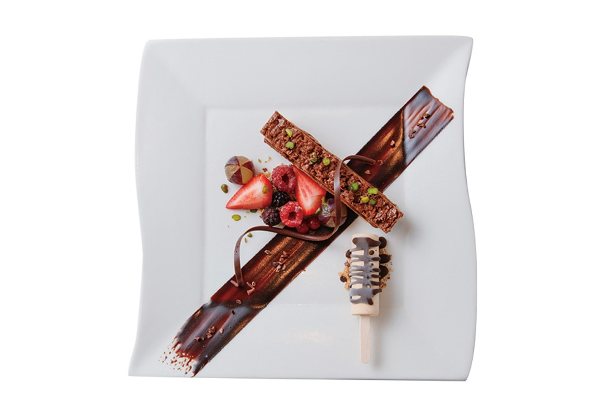
Утром в «Джованни» накрывают шведский стол с японскими и европейскими блюдами. Особенно хорош домашний хлеб.
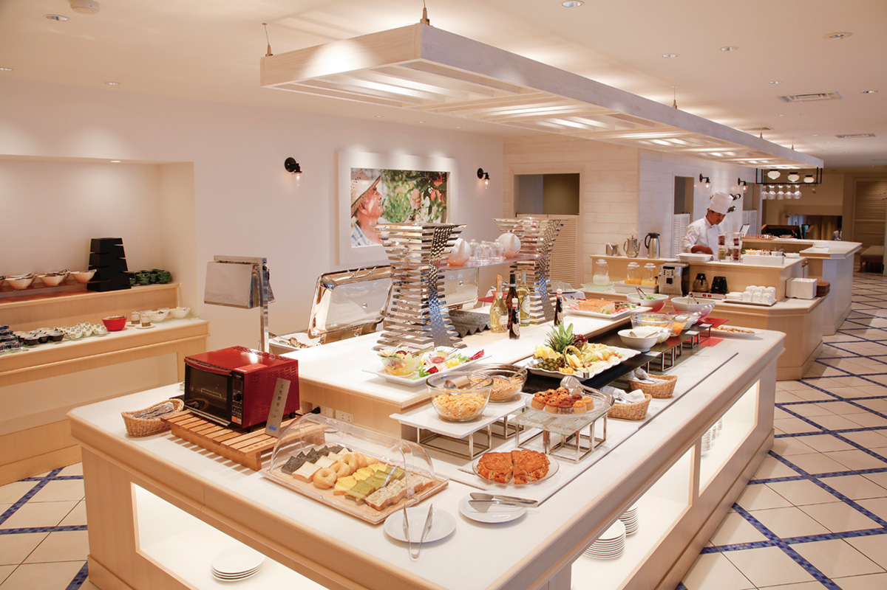
В винной карте итальянские вина соседствуют с собственными винами отеля. В 2020 году бокал разливного пива «Премиум Мольтс» стоил 900 иен, бутылка игристого «Франчакорта Брют» 11 000 иен, белого «Виэрис Совиньон» 2014 года 14 500 иен, а красного «Амароне делла Вальполичелла Классико» 9500 иен. Собственное белое «Инфинито» 2011 года стоило 8900 иен, красное 2008 года 7300 иен.
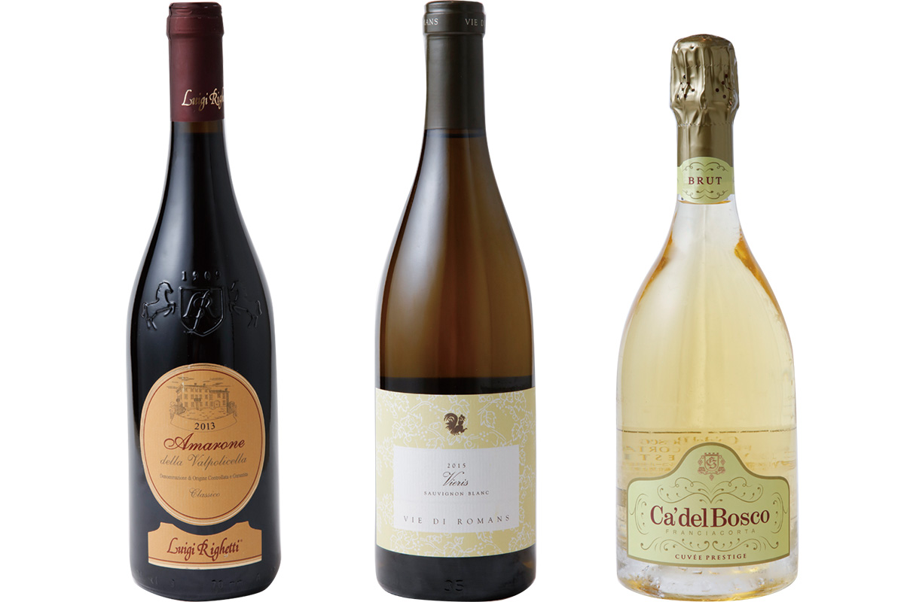
Меню следует за сезоном. Весной на кухне исаки, тунец-бонито, морское ушко, бобы, бамбуковые побеги и цветки рапса. Летом кальмары, морское ушко, томаты, баклажаны, грецкие орехи и тыква. Осенью приходит время рыбы куэ, лангуста, ставриды, таро и дайкона. Зимой к куэ и лангусту добавляются голубой и длинноперый тунец, побеги аралии и почки белокопытника.
«Наги»: японская кухня с выдумкой
В отдельном корпусе работает ресторан авторской японской кухни «Наги» с отдельной стойкой для темпуры. Свежие морепродукты и сезонные продукты здесь не жалеют. Ресторан открыт только по вечерам, но если при бронировании номера сказать, что хотите японский ужин, вам приготовят авторское меню.
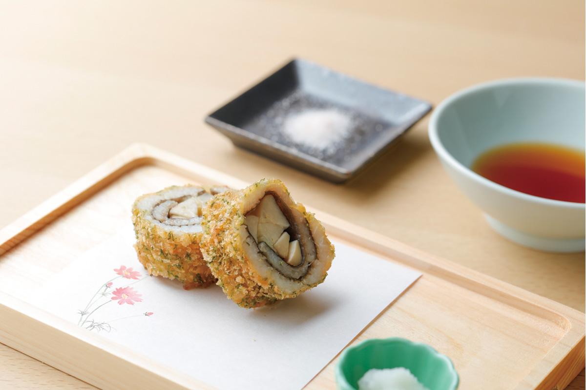
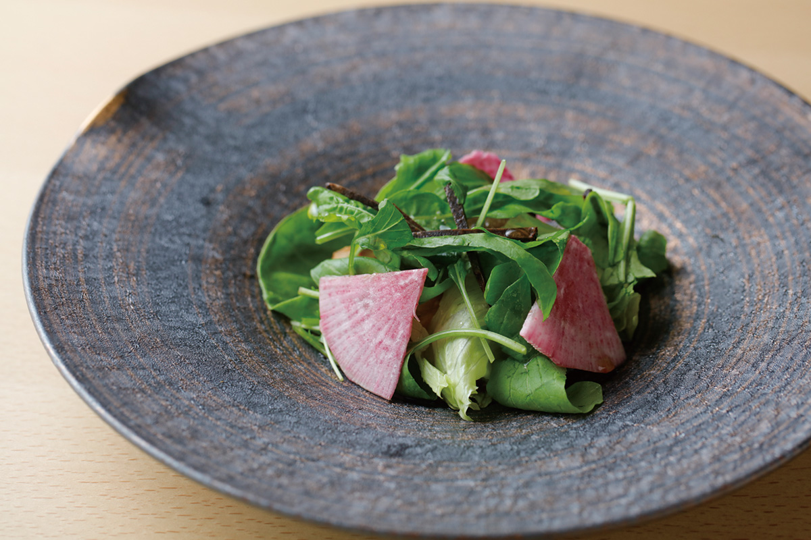
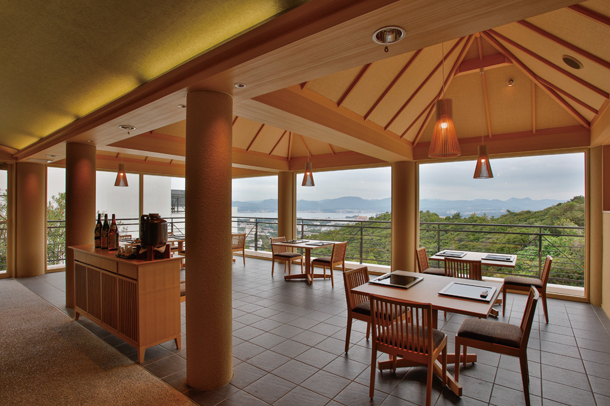
Спа
Юдзу из Кодзагавы
В салоне «Ла Мер» предлагают фирменную процедуру с ароматом юдзу из Кодзагавы, сельского посёлка на самом юге полуострова Кии. Такой процедуры нет больше нигде. Мы попробовали её сами: у терапевтов уверенные руки, и напряжение в теле и в голове отпустило. Поесть, выпить и расслабиться: ради этого и едут на курорт.
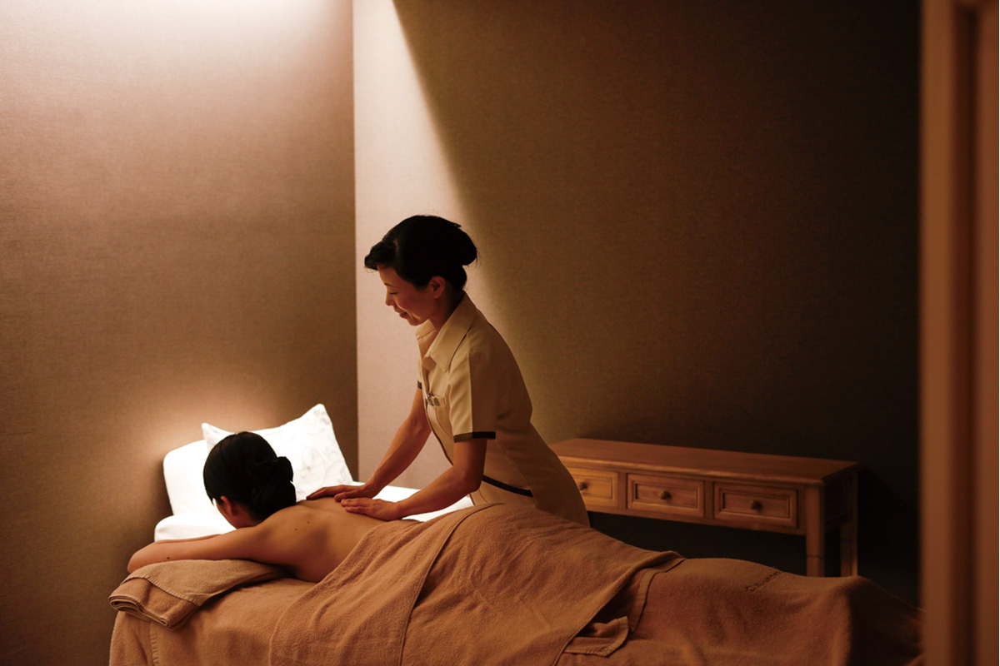
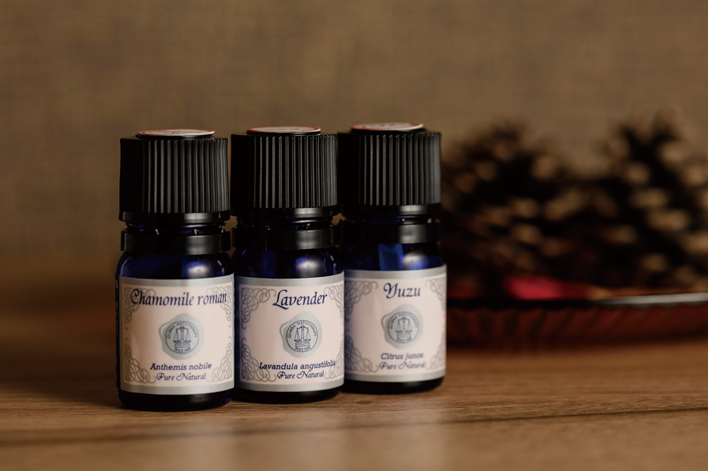
В номерах есть шампунь, гель для душа и лосьон для тела от «Булгари», плотные полотенца из Имабари, которые хорошо впитывают воду, и халат из махровой ткани, легче обычного. Пижама сшита из ткани с узором и отделана тёмно-синим кантом. К онсэну полагается юката: синяя для мужчин и красная с сакурой для женщин, а поверх неё накидка хаори без рукавов для весны и лета, у мужчин и женщин разного цвета.
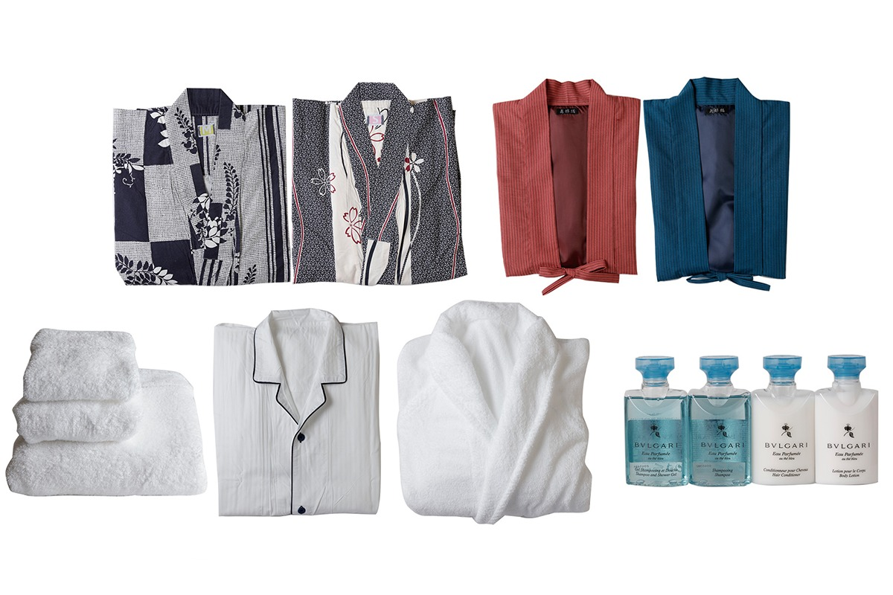
«Инфинито» (INFINITO HOTEL & SPA)
- Адрес
- префектура Вакаяма, уезд Нисимуро, Сирахама, 2018
- Телефон
- +81 739-42-2733
- Номера
- 74
- Цены / Вход
- от 23 300 иен без налога за ночь с ужином и завтраком
- Заезд / выезд
- заезд с 15:00 (не позднее 21:00), выезд до 11:00
- Как добраться
- около 15 минут на такси от станции Сирахама; около 5 минут на машине от аэропорта Нанки-Сирахама; около 2,5 часа на машине от станции Осака
Фото: Юити Ногути.